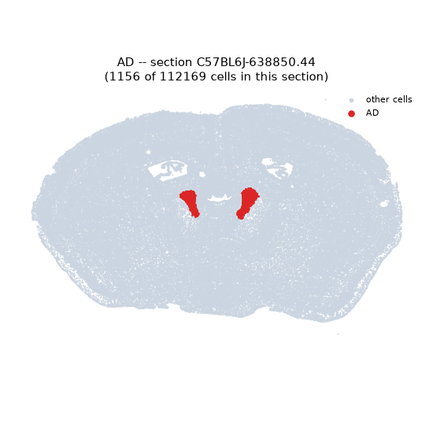
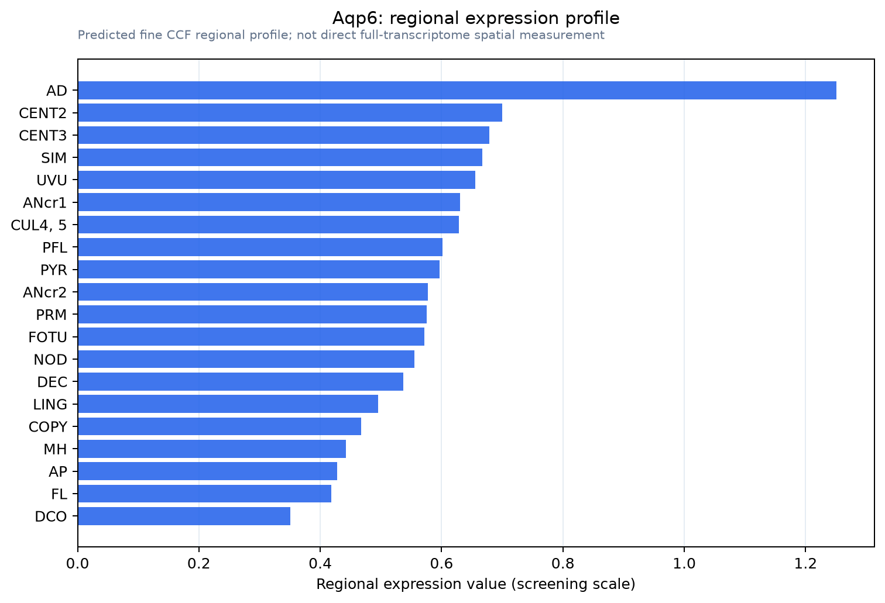

Aqp6
Aquaporin-6 (AQP-6)
Spatial tier: RESTRICTED · Class: ION_CHANNEL · Top region: AD (Anterodorsal nucleus) · Positive regions: 20/554
47.8Discovery Score
40.1Targetability Score
CEvidence grade C
What this means: Aqp6: fine CCF profile is restricted toward AD (top regions: AD, CENT2, CENT3, SIM, UVU; 20 positive regions); direct spatial validation is still required.
Function in AD: evidence, prediction, innovation
- Gene function
- Aqp6 encodes aquaporin-6, an atypical water-channel family member. Rather than sitting in the plasma membrane it resides largely in intracellular vesicles and behaves as a low-pH- and mercury-gated anion channel with high nitrate permeability plus modest water permeability, best established in kidney collecting duct intercalated cells.
- Region function
- The anterodorsal thalamic nucleus is the core thalamic node of the head-direction system, relaying vestibular-derived directional signals to postsubiculum and entorhinal cortex for spatial orientation.
- Published in this region
- none No region-specific literature found. Brain aquaporin surveys report AQP1, AQP4 and AQP9 in cerebral microvessels and glia rather than AQP6 (Kobayashi et al. 2001), and mouse Aqp6 is characterised as predominantly renal with intracellular retention (Nagase et al. 2007; Yasui et al. 1999).
- Predicted function
- Prediction: if aquaporin-6 is expressed by AD neurons or glia, its most plausible role is vesicular anion and water flux affecting intracellular pH and vesicle osmotic balance, not bulk water transport, since AQP6 opens only on acidification. Knockout should leave gross behaviour normal but degrade head-direction tuning stability at high firing rates. Confirming protein expression comes first.
- Innovation
- ★★★☆☆ 3/5 AQP6 in thalamus is unexplored, but brain expression appears minimal and no loss-of-function neural tool exists.
- Tools
- anti-AQP6 antibodies (Nagase et al. 2007); Hg2+ and low pH as activators; no Aqp6 Cre or conditional allele; AD access via anterior-thalamic Cre lines and AAV.
- References
Direct evidence located at the region
No Allen ISH section could be located at this region's centroid for the recorded experiments.
Look it up yourself: Allen Mouse Brain ISH for Aqp6Allen reference atlas: AD (structure 64)ABC Atlas MERFISH viewer(in the ABC Atlas choose dataset MERFISH-C57BL6J-638850-CCF, colour cells by gene "Aqp6" or by parcellation_substructure "AD")All genes confined to AD + 3-D brain
Direct spatial evidence
MERFISH REGION LOCATOR

Regional expression figure

Predicted WMB × fine-CCF profile; not direct full-transcriptome spatial measurement.
Spatial profile
Evidence and specificity
- Evidence status
- PREDICTED_FINE
- Direct sources
- None; predicted localization only
- Exclusive threshold
- 12 positive regions out of 554
- Spatial specificity
- 0.352
- Top-region fraction
- 0.072
- Filter status
- PASS
Interpretation limits
- Cell-type-to-region projection is imputed expression, not direct spatial measurement.
- Adult reference atlases do not establish stability across age, sex, strain, state, or disease.
- Transcript abundance does not guarantee protein abundance or genetic-tool performance.